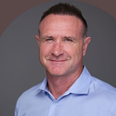

Influence Consulting
Our Facilitators
All our people are talented and respected facilitators who have enjoyed successful careers in a variety of sectors. They service clients from New Zealand and beyond.

Kerry Kirton
Auckland, New Zealand
Kerry Kirton
Kerry established Influence Consulting and runs the company as managing director. He has also developed relationships with major clients across the Asia Pacific region for many years.
His clients consider him to be a trusted and strategic advisor who is able to make meaningful contributions to their organisational goals. His experience, creativity and business acumen means he is able to tailor solutions that best suit his clients’ needs. Kerry holds degrees in law and commerce and practiced as a corporate lawyer for many years prior to establishing Influence Consulting.
James Burkitt
Wellington, New Zealand
James Burkitt
James is a director of Influence Consulting. He regularly leads workshops and coaches individuals, both in New Zealand and internationally, in the area of face-to-face communication skills. He works with professionals with frontline business development responsibilities from a wide range of professional service firms.
Private organisations and government agencies regularly use James to develop the influencing and presenting skills of their staff. Prior to joining Influence Consulting in 2004, James worked as a lawyer for 10 years, including stints in London, Singapore and Thailand. In his last legal role, he established and built the corporate practice for an international firm in Thailand, involving many aspects of business development and influencing. This real-world experience ensures that his coaching is relevant, credible and practical for his clients. James holds a law degree.
Duncan Ashford
Queenstown, New Zealand
Duncan Ashford
Duncan Ashford is passionate about improving business performance and personal success through behavioural change. He now provides coaching and training on all aspects of influencing and communication skills, including presentation and relationship selling skills.
With over 25 years’ experience working in senior Sales, Relationship Management and Learning & Development roles with global financial institutions, Duncan truly understands the skills needed to successfully interact and communicate with people and business. He also understands regional and cultural nuances in sales and communication, having worked in the UK, USA, Hong Kong, China, Singapore, Thailand, Australia and New Zealand. Duncan holds a Bachelor of Arts degree from London University.
Kate Peterson
Christchurch, New Zealand
Kate Peterson
Kate has worked across a variety of industries and developed an abundance of skills in sales, operations, customer service, business management, HR and training.
This includes 2 years with the Progressive Group, 9 years with Lion Nathan in New Zealand and Australia, 2 years with PGG Wrightson and 3.5 years with Meridian Energy as General Manager of Culture and Change.
Kate provides a vast amount of expertise in a range of people matters. The majority of her work however is with leaders and their talented people – those who choose to ensure that their investment in each other is maximized, without compromising what really matters to each of them.
John Gelagin
Sydney, Australia
John Gelagin
John is noted as a highly professional and experienced facilitator committed to delivering relevant and engaging training. Over the past 8 years, he has worked with many hundreds of people helping them to influence others, deliver engaging presentations and build business development skills. He has a relaxed but professional approach and relates easily to people.
Before joining Influence, John practised law for 8 years with firms in Australia and the UK and spent 5 years with an international publishing company in management roles. John holds a science and law degree.
David Lennane
Melbourne, Australia
David Lennane
David Lennane has coached in the area of communication and influencing skills for over 20 years. He assists clients across Australia and New Zealand from his Melbourne base.
David’s experience includes working with groups and individuals to help them prepare, rehearse and deliver content in critical influencing situations. He specialises in coaching around influencing skills coaching for in-house teams within large organisations, client conversations, and high stakes bid and tender presentations. His background includes senior marketing and management roles at leading professional service firms. Before entering these roles, he spent seven years as a PR consultant in New Zealand and the UK.
Abigail Vink
Wellington, New Zealand
Abigail Vink
Abigail is an experienced coach and facilitator with a particular focus on the public sector. She enjoys supporting others as they reflect on their thinking and behavioural patterns and make positive changes to support their professional effectiveness. Abigail holds coaching credentials with the International Coaching Federation, Institute of Executive Coaching and Leadership and Strengths Network Aotearoa.
Abigail is skilled in communication in both written and oral forms, beginning her career in foreign policy and diplomacy. She has extensive experience communicating with individuals and groups with diverse backgrounds including cross-culturally. Abigail holds Bachelor of Laws and Bachelor of Arts (Chinese) degrees.
Susan Miller
Auckland, New Zealand
Susan Miller
Susan is an experienced coach, facilitator and mediator having predominantly worked in the public health, community and legal sectors. She has spent the past 9 years dedicated to facilitating communications courses that have equipped people to influence their clients and colleagues for better work and life outcomes.
Susan has a law degree, trained mediator and licensed RTT practitioner.
Sarah Morton
Auckland, New Zealand
Sarah Morton
Sarah has a Bachelor of Arts (Political Science), Post Graduate Diploma in Drama (Auckland University) and LTCL Effective Speaking (Trinity College).
An engaging facilitator, Sarah Morton has worked as a teacher and trainer for 30 years, for the last 12 years in business-based training. Sarah has worked on a range of leadership and business communication programmes for organisations such as Downer, Fisher & Paykel Healthcare, ADHB, Sistema, and ETEL. In 2019 she was acknowledged with a “Highly Commended Champion Trainer” Award by Skills Highway.
Sarah is an experienced facilitator who knows how to develop the skills required to influence, inspire others and win business.